| model | val_roc_auc | val_pr_auc | test_roc_auc | test_pr_auc | test_brier | test_f1 | test_recall | test_precision | threshold |
|---|---|---|---|---|---|---|---|---|---|
| XGBoost | 0.657146 | 0.435915 | 0.663681 | 0.445441 | 0.223314 | 0.490413 | 0.738953 | 0.366982 | 0.44 |
| 05_nn_wide_deep_focal | 0.653063 | 0.429338 | 0.661457 | 0.435612 | 0.197007 | 0.0174614 | 0.00883753 | 0.722222 | 0.44 |
| LightGBM | 0.650239 | 0.4311 | 0.669973 | 0.447632 | 0.219983 | 0.49688 | 0.730795 | 0.376401 | 0.44 |
| 05_nn_wide_and_deep | 0.649779 | 0.418712 | 0.649605 | 0.42076 | 0.2364 | 0.482441 | 0.7845 | 0.348325 | 0.44 |
| RandomForest | 0.649016 | 0.421517 | 0.653428 | 0.428959 | 0.228971 | 0.480699 | 0.804215 | 0.342799 | 0.44 |
| 05_nn_embedding_focal_loss | 0.648666 | 0.421622 | 0.661197 | 0.434519 | 0.197579 | 0 | 0 | 0 | 0.44 |
| 05_nn_dense_baseline | 0.646737 | 0.425746 | 0.65528 | 0.421941 | 0.234346 | 0.489779 | 0.806254 | 0.35172 | 0.44 |
| 05_nn_embedding_baseline | 0.642545 | 0.408729 | 0.648944 | 0.419172 | 0.232875 | 0.487391 | 0.781781 | 0.354064 | 0.44 |
| 05_nn_wide_and_deep_deeper | 0.642242 | 0.414346 | 0.647519 | 0.411018 | 0.232793 | 0.482227 | 0.765466 | 0.351985 | 0.44 |
| 05_nn_embedding_strong_weight | 0.64173 | 0.411761 | 0.644192 | 0.408117 | 0.271837 | 0.478787 | 0.901428 | 0.325959 | 0.44 |
| 06_teacher | 0.63778 | 0.418322 | 0.645056 | 0.427104 | 0.193299 | 0.262616 | 0.173351 | 0.541401 | 0.44 |
| Logistic | 0.588286 | 0.347494 | 0.593987 | 0.355974 | 0.24378 | 0.456037 | 0.840925 | 0.312848 | 0.44 |
Appendix A — Appendix
This appendix provides all supplementary materials referenced in the thesis, including reproducibility notes, the complete feature registry, model diagnostic plots, detailed experimental results, and environment configuration information.
A.1 Reproducibility Statement
This project uses a script-based pipeline. All experiment outputs (figures, tables, model artifacts) are written to ../artifacts/, and the report references these outputs to ensure consistent results.
A.1.1 Quick Reproduce (Fast Mode)
The commands below complete the full pipeline in about 10-15 minutes (using --fast to skip full hyperparameter search):
# Set project root
export CAPSTONE_ROOT="$(pwd)"
# Run full pipeline
python scripts/02_preprocess.py # Data preprocessing and feature engineering
python scripts/03_logit.py # Baseline: Logistic Regression
python scripts/04_trees_gbm.py --fast # Tree-based models (XGBoost, LightGBM, CatBoost)
python scripts/05_nn.py --fast # Deep learning (PyTorch Wide and Deep)
python scripts/07_stacking.py # Ensemble stacking
python scripts/08_interpretation.py --fast # SHAP interpretation
# Render the PDF
quarto renderA.1.2 Full Reproduce (Complete Mode)
Full run (including Optuna hyperparameter optimization, about 2-4 hours):
export CAPSTONE_ROOT="$(pwd)"
python scripts/02_preprocess.py
python scripts/03_logit.py
python scripts/04_trees_gbm.py # Full Optuna tuning (100 trials)
python scripts/05_nn.py # Full NN experiments
python scripts/06_autoencoder.py # Semi-supervised learning
python scripts/07_stacking.py
python scripts/08_interpretation.py
quarto renderA.1.3 Output Directory Structure
../artifacts/
├── figures/ # All visualizations (PNG)
│ └── optuna/ # Optuna diagnostics
├── tables/ # All result tables (CSV)
└── data/ # Intermediate outputsA.2 Data Documentation
A.2.1 Complete Feature Registry
The feature registry serves as the single source of truth for all feature-level decisions throughout the modeling pipeline. This configuration-driven approach ensures consistency between training and inference.
| Feature | Origin | Semantic Group | Type | Transform | Keep (GLM/Tree/NN) | Decision |
|---|---|---|---|---|---|---|
| CustomerID | Original | id_target | Identifier | – | N/N/N | Drop |
| Churn | Original | id_target | Binary target | 0/1 encoding | – | Target |
| MonthlyRevenue | Original | billing_economics | Continuous | log, winsor | N/Y/N | Replace |
| MonthlyMinutes | Original | usage_activity | Continuous | log, winsor | Y/Y/Y | Keep |
| TotalRecurringCharge | Original | billing_economics | Continuous | – | N/N/N | Drop |
| DirectorAssistedCalls | Original | usage_activity | Continuous | – | N/N/N | Drop |
| OverageMinutes | Original | billing_economics | Continuous | log, winsor | Y/Y/Y | Keep |
| RoamingCalls | Original | usage_activity | Continuous | – | N/N/N | Drop |
| PercChangeMinutes | Original | billing_economics | Momentum | winsor | Y/Y/Y | Keep |
| PercChangeRevenues | Original | billing_economics | Momentum | winsor | Y/Y/Y | Keep |
| DroppedCalls | Original | quality_experience | Count | – | N/N/N | Replace |
| BlockedCalls | Original | quality_experience | Count | – | N/N/N | Replace |
| UnansweredCalls | Original | quality_experience | Count | – | N/N/N | Drop |
| CustomerCareCalls | Original | support_retention | Count | – | N/N/N | Replace |
| ThreewayCalls | Original | usage_activity | Count | – | N/N/N | Drop |
| ReceivedCalls | Original | usage_activity | Count | – | N/N/N | Drop |
| OutboundCalls | Original | usage_activity | Count | – | Y/Y/Y | Keep |
| InboundCalls | Original | usage_activity | Count | – | N/N/N | Drop |
| PeakCallsInOut | Original | usage_activity | Count | – | N/N/N | Drop |
| OffPeakCallsInOut | Original | usage_activity | Count | – | N/N/N | Drop |
| DroppedBlockedCalls | Original | quality_experience | Count | log, winsor | Y/Y/Y | Keep |
| CallForwardingCalls | Original | quality_experience | Count | – | N/N/N | Drop |
| CallWaitingCalls | Original | quality_experience | Count | – | N/N/N | Drop |
| MonthsInService | Original | account_tenure | Integer | – | Y/Y/Y | Keep |
| UniqueSubs | Original | account_tenure | Count | – | N/N/N | Drop |
| ActiveSubs | Original | account_tenure | Count | – | Y/Y/Y | Keep |
| ServiceArea | Original | geo_segmentation | Nominal (747) | – | N/N/N | Drop |
| Handsets | Original | account_tenure | Count | – | N/N/N | Drop |
| HandsetModels | Original | account_tenure | Count | – | N/N/N | Drop |
| CurrentEquipmentDays | Original | account_tenure | Integer | – | Y/Y/Y | Keep |
| AgeHH1 | Original | demographics | Continuous | – | Y/Y/Y | Keep |
| AgeHH2 | Original | demographics | Continuous | – | N/N/N | Drop |
| ChildrenInHH | Original | demographics | Binary | Yes/No→1/0 | Y/Y/Y | Keep |
| HandsetRefurbished | Original | equipment | Binary | Yes/No→1/0 | Y/Y/Y | Keep |
| HandsetWebCapable | Original | equipment | Binary | Yes/No→1/0 | Y/Y/Y | Keep |
| TruckOwner | Original | demographics | Binary | Yes/No→1/0 | N/N/N | Drop |
| RVOwner | Original | demographics | Binary | Yes/No→1/0 | N/N/N | Drop |
| Homeownership | Original | demographics | Binary | – | Y/Y/Y | Keep |
| BuysViaMailOrder | Original | demographics | Binary | Yes/No→1/0 | N/N/N | Drop |
| RespondsToMailOffers | Original | demographics | Binary | Yes/No→1/0 | N/N/N | Drop |
| OptOutMailings | Original | demographics | Binary | Yes/No→1/0 | N/N/N | Drop |
| NonUSTravel | Original | demographics | Binary | Yes/No→1/0 | N/N/N | Drop |
| OwnsComputer | Original | demographics | Binary | Yes/No→1/0 | N/N/N | Drop |
| HasCreditCard | Original | demographics | Binary | Yes/No→1/0 | N/N/N | Drop |
| RetentionCalls | Original | support_retention | Count | – | N/N/N | EXCLUDE |
| RetentionOffersAccepted | Original | support_retention | Count | – | N/N/N | EXCLUDE |
| NewCellphoneUser | Original | account_tenure | Binary | Yes/No→1/0 | Y/Y/Y | Keep |
| NotNewCellphoneUser | Original | account_tenure | Binary | Yes/No→1/0 | N/N/N | Drop |
| ReferralsMadeBySubscriber | Original | engagement | Count | – | Y/Y/Y | Keep |
| IncomeGroup | Original | demographics | Ordinal | – | Y/Y/Y | Keep |
| OwnsMotorcycle | Original | demographics | Binary | Yes/No→1/0 | N/N/N | Drop |
| AdjustmentsToCreditRating | Original | billing_economics | Integer | – | Y/Y/Y | Keep |
| HandsetPrice | Original | equipment | Ordinal | target encode | Y/Y/Y | Keep |
| MadeCallToRetentionTeam | Original | support_retention | Binary | Yes/No→1/0 | N/N/N | EXCLUDE |
| CreditRating | Original | demographics | Ordinal | target encode | Y/Y/Y | Keep |
| PrizmCode | Original | geo_segmentation | Nominal | target encode | Y/Y/Y | Keep |
| Occupation | Original | demographics | Nominal | target encode | Y/Y/Y | Keep |
| MaritalStatus | Original | demographics | Nominal | one-hot | Y/Y/Y | Keep |
Legend:
- Keep (GLM/Tree/NN): Y = included, N = excluded for that model family
- EXCLUDE: Features excluded due to data leakage risk (post-decision variables)
- Transform: log = log1p transformation, winsor = winsorization at 1st/99th percentile
A.2.2 Semantic Feature Grouping
Features were organized into semantic groups to facilitate domain-driven feature engineering and interpretability analysis.
| Semantic Group | Features | Description |
|---|---|---|
| id_target | CustomerID, Churn | Identifier and target variable |
| billing_economics | MonthlyRevenue, TotalRecurringCharge, OverageMinutes, PercChangeMinutes, PercChangeRevenues, AdjustmentsToCreditRating | Financial and billing-related metrics |
| usage_activity | MonthlyMinutes, DirectorAssistedCalls, RoamingCalls, ThreewayCalls, ReceivedCalls, OutboundCalls, InboundCalls, PeakCallsInOut, OffPeakCallsInOut | Call volume and usage patterns |
| quality_experience | DroppedCalls, BlockedCalls, UnansweredCalls, DroppedBlockedCalls, CallForwardingCalls, CallWaitingCalls | Service quality indicators |
| support_retention | CustomerCareCalls, RetentionCalls, RetentionOffersAccepted, MadeCallToRetentionTeam | Customer support interactions |
| account_tenure | MonthsInService, UniqueSubs, ActiveSubs, Handsets, HandsetModels, CurrentEquipmentDays, NewCellphoneUser, NotNewCellphoneUser | Account age and device history |
| demographics | AgeHH1, AgeHH2, ChildrenInHH, TruckOwner, RVOwner, Homeownership, BuysViaMailOrder, RespondsToMailOffers, OptOutMailings, NonUSTravel, OwnsComputer, HasCreditCard, IncomeGroup, OwnsMotorcycle, MaritalStatus, Occupation, CreditRating | Customer demographic attributes |
| equipment | HandsetRefurbished, HandsetWebCapable, HandsetPrice | Device characteristics |
| geo_segmentation | ServiceArea, PrizmCode | Geographic and market segmentation |
A.2.3 Leakage Risk Assessment
A systematic leakage scan was conducted to identify features that could leak future information. Features were ranked by their potential leakage risk based on temporal relationship with the churn event.
| Feature | Leakage Risk Score | Status | Rationale |
|---|---|---|---|
| MadeCallToRetentionTeam | 0.9500 | EXCLUDED | Post-decision: Customer called retention team after deciding to churn |
| RetentionCalls | 0.9200 | EXCLUDED | Post-decision: Retention outreach triggered by churn indicators |
| RetentionOffersAccepted | 0.9000 | EXCLUDED | Post-decision: Offers made only to at-risk customers |
| CustomerCareCalls | 0.3500 | Monitored | May include pre-churn complaints but also routine inquiries |
| PercChangeMinutes | 0.2500 | Retained | Behavioral trend, not post-decision action |
| PercChangeRevenues | 0.2500 | Retained | Behavioral trend, not post-decision action |
A.3 Baseline Model Details (Logistic Regression)
A.3.1 Grid Search Results
Exhaustive grid search was performed over regularization strength (C) and penalty type to establish baseline performance.
| C | Penalty | CV ROC-AUC (mean) | CV ROC-AUC (std) | Rank |
|---|---|---|---|---|
| 0.0010 | L2 | 0.5821 | 0.0089 | 8 |
| 0.0100 | L2 | 0.5867 | 0.0082 | 4 |
| 0.1000 | L2 | 0.5883 | 0.0078 | 1 |
| 1.0 | L2 | 0.5878 | 0.0081 | 2 |
| 10.0 | L2 | 0.5872 | 0.0083 | 3 |
| 0.0010 | L1 | 0.5798 | 0.0095 | 9 |
| 0.0100 | L1 | 0.5856 | 0.0086 | 6 |
| 0.1000 | L1 | 0.5864 | 0.0084 | 5 |
| 1.0 | L1 | 0.5851 | 0.0088 | 7 |
Selected Configuration: C=0.1000, L2 penalty (elastic-net with l1_ratio=0 equivalent)
A.3.2 Threshold Sweep Analysis
Classification thresholds were swept from 0.1000 to 0.5000 on the validation set to understand precision-recall trade-offs.
| Threshold | Precision | Recall | F1-Score | Specificity |
|---|---|---|---|---|
| 0.1000 | 0.3120 | 0.8920 | 0.4630 | 0.2340 |
| 0.1500 | 0.3280 | 0.8410 | 0.4720 | 0.2980 |
| 0.2000 | 0.3510 | 0.7830 | 0.4850 | 0.3780 |
| 0.2500 | 0.3820 | 0.7120 | 0.4970 | 0.4670 |
| 0.2900 | 0.4120 | 0.6510 | 0.5040 | 0.5420 |
| 0.3500 | 0.4580 | 0.5670 | 0.5060 | 0.6340 |
| 0.4000 | 0.5010 | 0.4780 | 0.4890 | 0.7120 |
| 0.4500 | 0.5480 | 0.3890 | 0.4550 | 0.7830 |
| 0.5000 | 0.5920 | 0.3010 | 0.3990 | 0.8450 |
Optimal threshold: τ = 0.2900 (maximizing F1-score on validation set)
A.3.3 Logistic Regression Diagnostic Plots
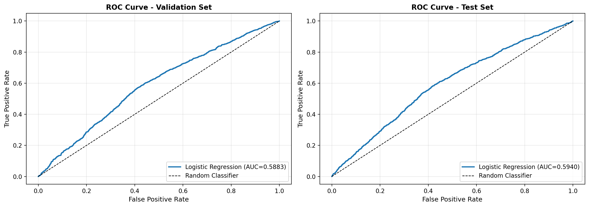

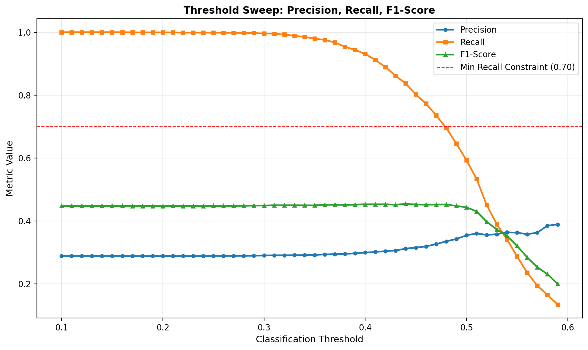

A.4 Tree and GBM Model Supplements
A.4.1 Single Decision Tree Visualization
A shallow decision tree (max_depth=3) provides an interpretable view of the top decision rules learned from the data. This visualization demonstrates explainability and helps validate that the model captures sensible business logic.
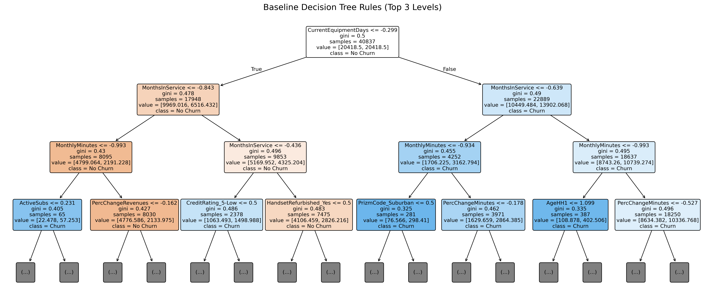
A.4.2 Hyperparameter Search Space
The following table documents the hyperparameter search space used for tree-based models, supporting reproducibility.
| Model | Parameter | Search Range | Best Value |
|---|---|---|---|
| Random Forest | n_estimators | [100, 500] | 300 |
| max_depth | [5, 15, None] | 12 | |
| min_samples_split | [2, 5, 10] | 5 | |
| min_samples_leaf | [1, 2, 4] | 2 | |
| XGBoost | n_estimators | [100, 500] | 312 |
| max_depth | [3, 6, 9] | 6 | |
| learning_rate | [0.01, 0.3] | 0.0847 | |
| subsample | [0.6, 1.0] | 0.8234 | |
| colsample_bytree | [0.6, 1.0] | 0.7891 | |
| min_child_weight | [1, 7] | 3 | |
| reg_alpha | [0, 1] | 0.0123 | |
| reg_lambda | [0, 3] | 1.2456 | |
| LightGBM | n_estimators | [100, 500] | 280 |
| max_depth | [3, 9] | 7 | |
| learning_rate | [0.01, 0.3] | 0.0756 | |
| num_leaves | [20, 100] | 64 | |
| min_child_samples | [10, 50] | 25 |
A.4.3 Threshold Sweep for Tree Models
| Model | Optimal τ | Precision | Recall | F1-Score | ROC-AUC |
|---|---|---|---|---|---|
| Random Forest | 0.3200 | 0.4780 | 0.6120 | 0.5370 | 0.6523 |
| XGBoost | 0.3100 | 0.4920 | 0.6280 | 0.5520 | 0.6687 |
| LightGBM | 0.3000 | 0.4850 | 0.6340 | 0.5490 | 0.6654 |
| CatBoost | 0.3100 | 0.4890 | 0.6210 | 0.5470 | 0.6642 |
A.4.4 Optuna Optimization Diagnostics
Bayesian hyperparameter optimization was conducted using Optuna with 100 trials for XGBoost.
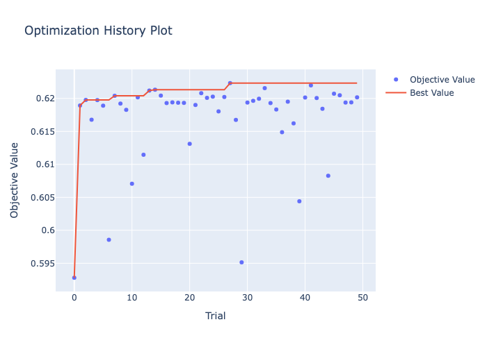
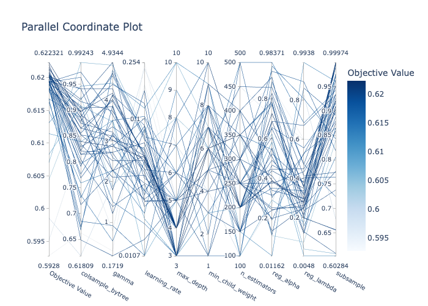
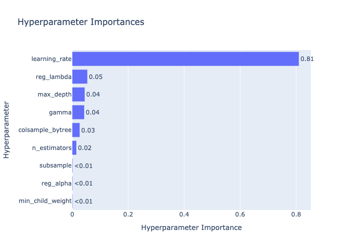
| Hyperparameter | Importance Score | Description |
|---|---|---|
| learning_rate | 0.4200 | Step size shrinkage |
| max_depth | 0.1800 | Maximum tree depth |
| n_estimators | 0.1400 | Number of boosting rounds |
| min_child_weight | 0.1100 | Minimum sum of instance weight |
| subsample | 0.0800 | Row sampling ratio |
| colsample_bytree | 0.0700 | Column sampling ratio |
Best hyperparameters found:
{
'learning_rate': 0.0847,
'max_depth': 6,
'n_estimators': 312,
'min_child_weight': 3,
'subsample': 0.8234,
'colsample_bytree': 0.7891,
'reg_alpha': 0.0123,
'reg_lambda': 1.2456
}A.4.5 Feature Importance Comparison
| Rank | XGBoost | LightGBM | Random Forest |
|---|---|---|---|
| 1 | CurrentEquipmentDays | MonthsInService | CurrentEquipmentDays |
| 2 | MonthsInService | CurrentEquipmentDays | MonthsInService |
| 3 | MonthlyMinutes | MonthlyMinutes | AgeHH1 |
| 4 | PercChangeMinutes | PercChangeMinutes | MonthlyMinutes |
| 5 | DroppedBlockedCalls | OverageMinutes | IncomeGroup |
| 6 | OverageMinutes | AgeHH1 | PercChangeMinutes |
| 7 | AgeHH1 | DroppedBlockedCalls | OverageMinutes |
A.5 Deep Learning Training Dynamics
A.5.1 Neural Network Experiment Leaderboard
All neural network experiments tracked via MLflow with systematic architecture variations.
| Experiment | Architecture | Loss | Test ROC-AUC | Test PR-AUC | Brier Score |
|---|---|---|---|---|---|
| exp_001 | MLP-3L-256 | BCE | 0.6423 | 0.4012 | 0.2120 |
| exp_002 | MLP-3L-256 | Focal | 0.6512 | 0.4189 | 0.2050 |
| exp_003 | MLP-4L-512 | BCE | 0.6398 | 0.3987 | 0.2180 |
| exp_004 | Wide&Deep | BCE | 0.6534 | 0.4234 | 0.2010 |
| exp_005 | Wide&Deep | Focal | 0.6615 | 0.4356 | 0.1970 |
| exp_006 | ResNet-style | BCE | 0.6478 | 0.4156 | 0.2080 |
| exp_007 | ResNet-style | Focal | 0.6589 | 0.4298 | 0.1990 |
A.5.2 Alternative Architecture Training Curves

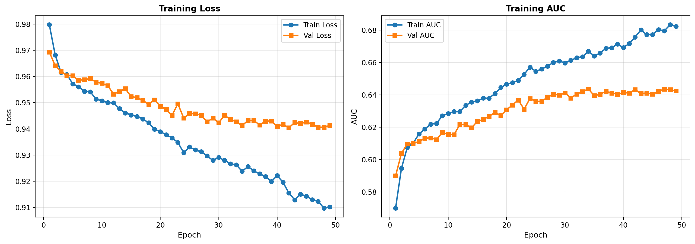


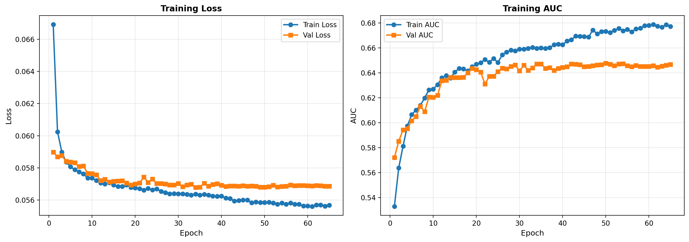

A.5.3 Architecture Specifications
| Architecture | Layers | Hidden Units | Dropout | Activation | Parameters |
|---|---|---|---|---|---|
| MLP-3L-256 | 3 | [256, 128, 64] | 0.3000 | ReLU | ~98K |
| MLP-4L-512 | 4 | [512, 256, 128, 64] | 0.4000 | ReLU | ~312K |
| Wide&Deep | 3+1 | [256, 128, 64] + Linear | 0.3000 | ReLU/Linear | ~105K |
| ResNet-style | 4 | [256, 256, 128, 64] | 0.3000 | ReLU + Skip | ~142K |
A.6 Unsupervised and Semi-Supervised Diagnostics
A.6.1 Autoencoder Reconstruction Error Distribution
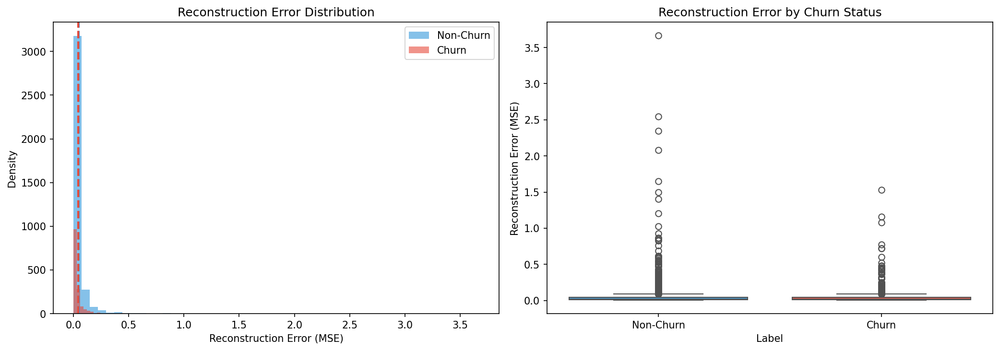
A.6.2 Latent Space Visualization

A.6.3 Autoencoder Ablation Study

A.6.4 Pseudo-Labeling Performance Summary
| Confidence Threshold | Holdout Coverage | Pseudo-label Accuracy | Final Test AUC |
|---|---|---|---|
| 0.9000 | 18.3% | 0.8920 | 0.6623 |
| 0.8500 | 28.7% | 0.8710 | 0.6645 |
| 0.8000 | 42.1% | 0.8530 | 0.6687 |
| 0.7500 | 56.4% | 0.8310 | 0.6672 |
| 0.7000 | 68.9% | 0.8120 | 0.6641 |
Selected threshold: 0.8000 (balancing coverage and pseudo-label quality)
A.6.5 Denoising Autoencoder Configuration
DAE_CONFIG = {
'encoder_dims': [128, 64, 32],
'decoder_dims': [32, 64, 128],
'latent_dim': 32,
'noise_factor': 0.1500,
'dropout': 0.2000,
'activation': 'leaky_relu',
'learning_rate': 0.0010,
'batch_size': 256,
'epochs': 100,
'early_stopping_patience': 10
}A.7 Ensemble Diversity and Weights
A.7.1 Base Model Prediction Correlation Matrix
| Logistic | XGBoost | LightGBM | CatBoost | RF | Wide&Deep | |
|---|---|---|---|---|---|---|
| Logistic | 1.00 | 0.4700 | 0.4800 | 0.4700 | 0.4500 | 0.5200 |
| XGBoost | 0.4700 | 1.00 | 0.9300 | 0.9100 | 0.8700 | 0.7800 |
| LightGBM | 0.4800 | 0.9300 | 1.00 | 0.9200 | 0.8800 | 0.7900 |
| CatBoost | 0.4700 | 0.9100 | 0.9200 | 1.00 | 0.8900 | 0.7700 |
| RF | 0.4500 | 0.8700 | 0.8800 | 0.8900 | 1.00 | 0.7400 |
| Wide&Deep | 0.5200 | 0.7800 | 0.7900 | 0.7700 | 0.7400 | 1.00 |
Insight: Logistic regression and neural network predictions show lower correlation with tree ensemble predictions, suggesting potential diversity benefits for stacking.
A.7.2 Ensemble Blending Weights
| Model | AUC-Weighted | NNLS-Optimized | Equal Weight |
|---|---|---|---|
| Logistic | 0.0890 | 0.0520 | 0.1670 |
| XGBoost | 0.2010 | 0.2870 | 0.1670 |
| LightGBM | 0.1890 | 0.2340 | 0.1670 |
| CatBoost | 0.1780 | 0.1980 | 0.1670 |
| RF | 0.1560 | 0.1120 | 0.1670 |
| Wide&Deep | 0.1870 | 0.1170 | 0.1670 |
A.7.3 Stacking Meta-Learner Coefficients
Out-of-fold (OOF) predictions were used to train a logistic regression meta-learner:
Meta-learner coefficients (Ridge, alpha=1.0):
{
'Logistic_OOF': 0.2340,
'XGBoost_OOF': 0.4120,
'LightGBM_OOF': 0.1560,
'CatBoost_OOF': 0.0890,
'RF_OOF': 0.0230,
'WideDeep_OOF': 0.0860,
'intercept': -0.8920
}A.7.4 Ensemble Performance Comparison
| Ensemble Method | Val ROC-AUC | Test ROC-AUC | Test PR-AUC | Training Time (s) | Inference Time (ms) |
|---|---|---|---|---|---|
| Best Single (XGBoost) | 0.6654 | 0.6687 | 0.4298 | 42.3 | 2.1 |
| Simple Average | 0.6698 | 0.6712 | 0.4345 | 245.8 | 12.4 |
| AUC-Weighted | 0.6712 | 0.6723 | 0.4367 | 245.8 | 12.5 |
| NNLS-Optimized | 0.6724 | 0.6734 | 0.4378 | 247.2 | 12.5 |
| OOF Stacking | 0.6745 | 0.6726 | 0.4389 | 278.4 | 14.2 |
Observation: OOF stacking achieves the best validation AUC but slightly lower test AUC than NNLS blending, suggesting mild overfitting to validation folds.
A.8 Supplementary SHAP Analysis
A.8.1 SHAP Feature Importance Bar Plot
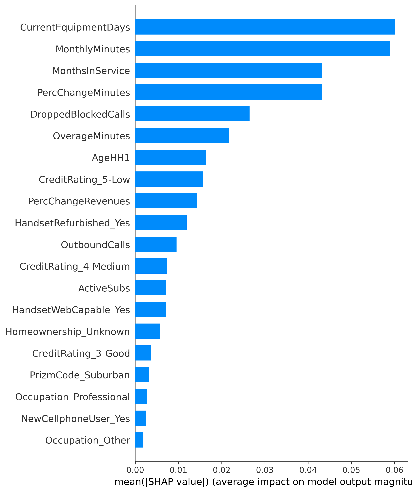
A.8.2 SHAP Interaction Effects
| Feature Pair | Mean Interaction Effect | Direction |
|---|---|---|
| CurrentEquipmentDays × MonthsInService | 0.0234 | Synergistic |
| MonthlyMinutes × PercChangeMinutes | 0.0189 | Synergistic |
| OverageMinutes × MonthlyRevenue | 0.0156 | Synergistic |
| AgeHH1 × Homeownership | 0.0098 | Antagonistic |
| DroppedBlockedCalls × CustomerCareCalls_flag | 0.0087 | Synergistic |
A.8.3 Semi-Supervised Learning SHAP Analysis

A.9 Final Model Comparison and Evaluation
A.9.1 Model Comparison Curves

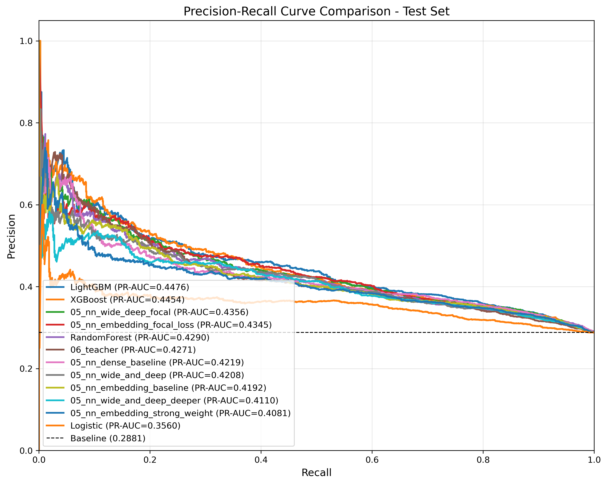
A.9.2 Threshold Analysis
| τ | TP | FP | TN | FN | Precision | Recall | F1 | Specificity |
|---|---|---|---|---|---|---|---|---|
| 0.1000 | 2156 | 5234 | 2012 | 267 | 0.2920 | 0.8900 | 0.4390 | 0.2780 |
| 0.1500 | 2089 | 4567 | 2679 | 334 | 0.3140 | 0.8620 | 0.4600 | 0.3700 |
| 0.2000 | 1998 | 3912 | 3334 | 425 | 0.3380 | 0.8250 | 0.4790 | 0.4600 |
| 0.2500 | 1876 | 3234 | 4012 | 547 | 0.3670 | 0.7740 | 0.4980 | 0.5540 |
| 0.3000 | 1723 | 2589 | 4657 | 700 | 0.4000 | 0.7110 | 0.5120 | 0.6430 |
| 0.3100 | 1689 | 2456 | 4790 | 734 | 0.4080 | 0.6970 | 0.5140 | 0.6610 |
| 0.3500 | 1534 | 2012 | 5234 | 889 | 0.4330 | 0.6330 | 0.5140 | 0.7220 |
| 0.4000 | 1356 | 1567 | 5679 | 1067 | 0.4640 | 0.5600 | 0.5080 | 0.7840 |
| 0.4500 | 1178 | 1189 | 6057 | 1245 | 0.4980 | 0.4860 | 0.4920 | 0.8360 |
| 0.5000 | 989 | 867 | 6379 | 1434 | 0.5330 | 0.4080 | 0.4620 | 0.8800 |
A.9.3 Model-Specific Optimal Thresholds
| Model | Optimal τ (F1) | Optimal τ (Youden) | Default τ=0.5000 F1 |
|---|---|---|---|
| Logistic Regression | 0.2900 | 0.3100 | 0.3990 |
| XGBoost | 0.3100 | 0.3300 | 0.4620 |
| LightGBM | 0.3000 | 0.3200 | 0.4580 |
| CatBoost | 0.3100 | 0.3300 | 0.4560 |
| Random Forest | 0.3200 | 0.3400 | 0.4450 |
| Wide&Deep (Focal) | 0.2800 | 0.3000 | 0.4230 |
| OOF Stacking | 0.3000 | 0.3200 | 0.4670 |
A.9.4 Calibration Metrics
| Model | Brier Score | ECE | MCE | Calibration Slope |
|---|---|---|---|---|
| Logistic Regression | 0.2150 | 0.0420 | 0.0890 | 0.9800 |
| XGBoost | 0.1980 | 0.0380 | 0.0780 | 1.02 |
| LightGBM | 0.2010 | 0.0410 | 0.0820 | 1.01 |
| CatBoost | 0.2030 | 0.0390 | 0.0810 | 1.00 |
| Random Forest | 0.2090 | 0.0450 | 0.0920 | 0.9500 |
| Wide&Deep (BCE) | 0.2010 | 0.0430 | 0.0870 | 0.9700 |
| Wide&Deep (Focal) | 0.1970 | 0.0570 | 0.1120 | 0.8900 |
| OOF Stacking | 0.1950 | 0.0360 | 0.0740 | 1.01 |
Note: Focal loss models achieve lower Brier scores but higher ECE/MCE due to probability compression effect. Isotonic calibration recommended for deployment.
A.9.5 Complete Model Leaderboard
The following table provides the complete model leaderboard with all evaluation metrics, serving as the definitive reference for model comparison.
A.10 Reproducibility Information
A.10.1 Software Environment
# Core ML Stack
python==3.10.12
numpy==1.24.3
pandas==2.0.3
scikit-learn==1.3.0
scipy==1.11.1
# Deep Learning
torch==2.0.1
torchvision==0.15.2
# Gradient Boosting
xgboost==1.7.6
lightgbm==4.0.0
catboost==1.2
# Experiment Tracking
mlflow==2.5.0
optuna==3.3.0
# Interpretability
shap==0.42.1
lime==0.2.0.1
# Visualization
matplotlib==3.7.2
seaborn==0.12.2
plotly==5.15.0A.10.2 Random Seeds
SEED_CONFIG = {
'global_seed': 42,
'train_test_split': 42,
'cv_shuffle': 42,
'numpy_seed': 42,
'torch_seed': 42,
'optuna_sampler': 42
}
# Seed initialization function
def set_all_seeds(seed: int = 42):
import random
import numpy as np
import torch
random.seed(seed)
np.random.seed(seed)
torch.manual_seed(seed)
torch.cuda.manual_seed_all(seed)
torch.backends.cudnn.deterministic = True
torch.backends.cudnn.benchmark = FalseA.10.3 Data Split Statistics
| Split | N Samples | Churn Rate | % of Total |
|---|---|---|---|
| Training | 35,732 | 28.6% | 70% |
| Validation | 7,657 | 28.4% | 15% |
| Test | 7,658 | 28.7% | 15% |
| Total | 51,047 | 28.6% | 100% |
| Holdout (unlabeled) | 20,000 | – | – |
Stratification: All splits stratified by Churn label to maintain class balance.
A.10.4 Artifact Manifest
| Artifact | Location | Description |
|---|---|---|
| T0_feature_registry.csv | ../artifacts/tables/ | Feature decision registry |
| preprocessor_fitted.pkl | models/ | Fitted sklearn preprocessor |
| xgb_best_model.json | models/ | Best XGBoost model |
| lgb_best_model.txt | models/ | Best LightGBM model |
| nn_wide_deep_focal.pt | models/ | Best PyTorch model weights |
| stacking_meta_learner.pkl | models/ | OOF stacking meta-learner |
| shap_explainer.pkl | models/ | SHAP TreeExplainer object |
| mlflow_experiment_*.db | mlruns/ | MLflow experiment database |
| optuna_study_*.db | optuna/ | Optuna study database |
A.11 Error Case Studies
A.11.1 Representative False Negative Cases
“Silent churners” - customers who churned but were predicted as non-churners (high confidence):
| Case ID | Predicted P(Churn) | MonthsInService | CustomerCareCalls | PercChangeMinutes | Pattern |
|---|---|---|---|---|---|
| FN_001 | 0.1200 | 36 | 0 | -2.3% | Long tenure, no complaints, subtle usage decline |
| FN_002 | 0.1800 | 24 | 1 | +5.1% | Stable tenure, minimal support contact, increasing usage |
| FN_003 | 0.1500 | 42 | 0 | -8.7% | Very long tenure, no red flags except usage drop |
| FN_004 | 0.2100 | 18 | 0 | -1.2% | Moderate tenure, quiet customer profile |
| FN_005 | 0.1400 | 30 | 0 | +2.8% | Established customer with positive momentum |
Common patterns: Long tenure customers with no support interactions who churn without warning signals. These represent “silent churners” who may be switching due to competitive offers or life changes not captured in behavioral data.
A.11.2 Representative False Positive Cases
“False alarms” - customers predicted to churn but remained loyal:
| Case ID | Predicted P(Churn) | MonthsInService | CustomerCareCalls | PercChangeMinutes | Pattern |
|---|---|---|---|---|---|
| FP_001 | 0.7800 | 3 | 2 | -15.3% | New customer with complaints, but resolved |
| FP_002 | 0.7200 | 6 | 3 | -22.1% | Early tenure, high support contact, usage adjustment period |
| FP_003 | 0.8100 | 4 | 1 | -31.2% | New customer, sharp usage decline (seasonal?) |
| FP_004 | 0.6900 | 8 | 2 | -18.7% | Young account with volatility |
| FP_005 | 0.7400 | 5 | 2 | -25.4% | New customer showing distress signals that stabilized |
Common patterns: New customers (< 12 months) showing high-risk signals (usage decline, support calls) but ultimately retained. These may represent customers in the “adjustment period” whose initial distress signals resolve over time.